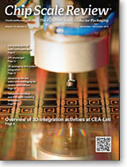
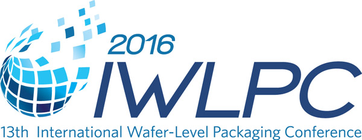
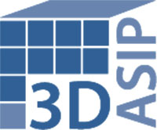

Current Issue
November • December 2015; Volume 19, Number 6
Cover Photo
Chip-to-wafer stacking enabled by 3D integration has significant potential to improve device performance while reducing power consumption. There are many possibilities for collaboration between foundries and OSATs, specifically with ultraprecise stacking (<1μm). Leti‘s roadmap calls for developing fine pitch, from classical thermocompression stacking with copper pillar, to ultra-dense bonding using Cu-Cu technology. Ultra-precise C2W is a promising possibility for the next generation of 3D-ICs.
Photo courtesy of CEA-Leti
Read the issue Download PDF SubscribeTech Briefs
by Debra Vogler, Senior Technical Editor
Submit Technology News

Bosch Sensortec enables sensor fusion with new sensor+software development package
Divya Thukkaram, Product Manager, Bosch SensortecBosch Sensortec recently announced the release of a compact 9-axis motion sensor — the BMF055 — along with a software development package that enables customized sensor systems to be programmed for specific applications. The new sensor is part of the company’s Application-Specific Sensor Node (ASSN) family and combines an accelerometer, a gyroscope and a magnetometer with a Cortex M0+ processor from Atmel’s SAMD20 microcontroller family. ...>>

Amkor’s Arcedera takes on MEMS packaging standardization
Adrian Arcedera, VP, MEMS & Sensors at Amkor Technology
Adrian Arcedera, VP, MEMS & Sensors at Amkor Technology, was a presenter at the CHInano 2015 Conference & Expo - International Conference on Commercialization of Transducer & MEMS (10/28-10/30/15, Suzhou, China). He tackled the topic of MEMS packaging standardization (10/28/15) at the conference and responded to questions posed to him during an interview with Chip Scale Review.
The need for packaging standards for MEMS was made clear by Arcedera who told CSR that the advent of consumer products that need MEMS sensors for products such as the Nintendo® Wii and smartphones is a major driver ...>>

A*STAR IME Consortium issues update on advanced packaging solutions
Chai Tai Chong, Principal Research Engineer, A*STAR’s Institute of Microelectronics (IME)
A*STAR’s Institute of Microelectronics (IME) and 11 of its 12th EPRC Consortium partners across the semiconductor supply chain have developed solutions in integrated circuit (IC) packaging. Members of the consortium include Ajinomoto, EV Group, GLOBALFOUNDRIES, Heraeus Materials, Henkel, Infineon Technologies, JSR Micro N.V., Linxens, and Tokyo Ohka Kogyo. The consortium announced in August that it had achieved its objectives of developing solutions to overcome the reliability and performance issues and technical challenges in packaging solutions for ...>>
Nordson EFD introduces a piezoelectric jetting technology
Bryan Teece, Senior Mechanical Engineer, Nordson EFD
Nordson EFD has introduced a piezoelectric jetting technology called PICO® Pµlse™ valve and PICO Toµch™T controller. According to the company, this technology enables the dispensing of very exact, repeatable micro-deposits as small as 0.5nL at up to 500Hz continuous, with 1500Hz maximum bursts. The new product’s non-contact jet valve's modular design makes it possible to jet low- to high-viscosity fluids onto any surface, including uneven and tough-to-reach substrates. ...>>
Industry Spotlight
Submit Industry SpotlightSiliconware Precision Industries Co., Ltd. and Hon Hai Precision Industry Co., Ltd. entered into a Letter of Intent whereby the parties will form a strategic alliance through the exchange of shares.
Taichung, Taiwan - August 28, 2015 - Hon Hai Precision Industry Co., Ltd. (TaiwanStock Exchange:2317.TT) (“Hon Hai”) and Siliconware Precision Industries Co., Ltd. (“SPIL” or the “Company”) (Taiwan Stock Exchange: 2325.TT, NASDAQ:SPIL) signed a Letter of Intent today, whereby the parties will form a strategic alliance through the exchange of shares in accordance with Article 156.8 of the Company Act. The alliance will provide customers with the best integrated service program through future collaboration on technology and business. ...>>Rudolph Technologies NSX 330 Series Widely Adopted for Advanced Packaging Inspection and Metrology
Flanders, NJ -September 1, 2015 - Rudolph Technologies, Inc. (NYSE: RTEC) today announced the widespread adoption and success of its newest macro defect inspection tool, the NSX® 330 Series. The NSX 330 Series provides high-speed macro defect inspection and 2D and 3D metrology for advanced packaging applications, which are being developed to support the mobility and the growing Internet of Things (IoT) markets. ...>>Imec and SPTS Technologies, an Orbotech Company, Collaborate on Critical Processes for 3D IC Wafer Stacking
San Francisco, CA – July 14, 2015 – Nano-electronics research center imec and SPTS Technologies, an Orbotech Company (NASDAQ: ORBK) company and supplier of advanced wafer processing solutions for the global semiconductor and related industries, announced at SEMICON West their collaboration on critical processes for 3D IC wafer stacking. They are jointly developing a highly accurate, short cycle-time dry silicon removal and low temperature passivation solution for through-silicon via-middle processing and thinning of the top-wafer in wafer-to-wafer bonding ...>>Industry Events
Dresden, Germany – Oct 8, 2015 - Visitors from around the world once again flocked to Dresden, Germany, to attend SEMICON Europa 2015 (October 6-8). The conference attracted visitors from major microelectronics and electronic systems companies, including buying teams from the world’s top capital spending IDMs, foundries, and fabless companies. The event has proven to be the largest semiconductor event in Europe with nearly 5,000 industry experts, professionals and executives attending. Compared to SEMICON Europa 2013 in Dresden, the 2015 show saw a 30% increase in exhibition space, a 10% increase in show attendance, and a 20% increase in attendance ...>>
San Jose, CA – October 15, 2015 - A highly regarded annual technical conference that covers leading edge advancements in the area of wafer-level technologies, the 2015 IWLPC conference was a great success with more than 650 attendees. Three themes were woven into the technical sessions: 1) fan-out WLCSP, 2) 2.5 and 3D IC packaging, and 3) MEMS packaging. The panel discussions and plenary presentations provided an effective backdrop to mingle and discuss these topics with a broad range of industry experts working in these areas. ...>>

Research Triangle Park, NC - August 7, 2015 - The 12th annual 3D Architectures for Semiconductor Integration and Packaging Conference, or 3D ASIP as it has come to be known, will be held December 15-17, 2015, at the Sofitel San Francisco Bay Hotel in Redwood City, California. It is the longest running conference on 2.5 / 3DIC focused on commercialization and infrastructure. ...>>